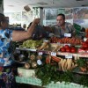

Anul trecut, un poliţist angajat ca şofer trăgea ca dementul 11 focuri de armă într-un coafor din Bucureşti, supărat fiind pe nevastă-sa, care voia să divorţeze. În evenimentul cunoscut drept “masacrul din Complexul Perla“, două femei au murit, alte şase persoane fiind rănite de gloanţe. Încă doi oameni au fost fugăriţi cu pistolul Glock de [...]

Cutremurul devastator care va zgudui România şubredă s-a mutat în 2013! După ce şi-a bătut joc timp de şase ani de toţi “cutremurologii” cu veleităţi de profet (vezi aici seria prezicerilor ratate 2007-2012), marele cutremur primeşte o nouă şansă, iar ştirea anuală cu ameninţarea seismică revine. Poate că data asta cutremurul va fi mai serios şi va face din tecuceanul George Purcaru eroul [...]

Să arestezi un şef de la Antene pentru şantaj e ca şi când l-ai sălta pe Moş Crăciun pentru că poartă roşu. Să cercetezi penal un director din trustul Intact Media Group pentru extorcare e ca şi când ai amenda plantele pentru fotosinteză. Să-l încarcerezi, fie şi doar pentru câteva zile, pe viitorul ginere al [...]
Înainte să rămână fără medicamente, tribunul a rămas fără tribuna de la partid. Aparent, Corneliu Vadim Tudor a fost mazilit de la conducerea Partidului România Mare de o facţiune rebelă, condusă de câţiva iluştri anonimi, pre numele lor Dumitru Badea şi Ioan Bâldea [sic!]. Astfel, ultimul partid de azil buzunar construit după modelul liderului locomotivă îşi [...]
În oraşu-n care plouă de trei ori pe săptămână locuiesc: un bătrân şi o bătrână – două jucării stricate – (nu strâmbaţi din nas, Minulescu le-a zis aşa*), trei funcţionari la primărie (cu primar cu tot) un angajat la o companie privată din oraşul vecin (care face naveta către locul de muncă) şi un aprozarist [...]

Reporteri frenetici – prezentatori incisivi – analişti pesimişti – procese – directori – acuzaţii – şantajişti – şantajaţi – interceptări – stenograme – varani – morse competente – Vocea Rusiei – acuzaţii – bălăcăreli – “Jos Băsescu!” – procurori – valize – fotbalişti – patroni – tribunale – penitenciare – cluburi – lacrimile lui Becali [...]

Selecţionerul România e singura echipă naţională de fotbal din lume antrenată de un infractor, chiar în timpul în care acesta îşi derulează pedeapsa. Ca jucător, barbugiul Victor Piţurcă a fost condamnat la şase luni de închisoare cu executare pentru jocuri de noroc, în 1981, la Târgu-Jiu. Ca antrenor, acelaşi Nea Piţi s-a ales cu o [...]

Stegozaurii erau nişte dinozauri cu armură care au vieţuit în perioada jurasică. Aparent, urmaşul stegozaurului, Varanul cu televiziune, a scăpat de solzi, dar şi-a păstrat obsesia pentru steaguri. Complexată de dimensiunile-i fizice mai reduse decât ale strămoşilor din familia Stegosaurus, reptila contemporană nu pierde nicio ocazie de a-şi etala mania pentru gabarit. Cu cât mai [...]

Faci parte din a doua generaţie încălţată a neamului tău? Ţi-ai tras deja termopane, gresie italienească, televizor cu diagonala de un metru şi canapele de piele? Când ieşi în faţa blocului, rupi gura vecinilor cu un SUV negru-lucios parcat pe trotuar, un smartphone şi o tabletă de ultimă generaţie? Te-ai dezobişnuit, în sfârşit, să mai [...]

Presa a dat publicităţii imagini din celula în care Gigi Becali îşi va petrece primele zile de puşcărie. B-oierul de Pipera se va culca şi se va trezi privind fotografia de pe uşă, din care zâmbeşte simpatic un politician celebru, în variantă uşor stilizată. În camera cu şase paturi de la Penitenciarul Rahova, mesajul simbolic [...]

Blonzii, bruneţii şi cărunţii sunt mai evoluaţi. Ei cunosc deja avantajele fermelor moderne şi n-au nevoie să-i înveţe popa cum stă treaba cu mulsul mecanic. Şatenii, în schimb, sunt mai puţin informaţi, aşa că vor primi lecţii de zootehnie la biserică. Cu adevărat INEDIT, nu-i aşa? Informaţia apare ca ditamai titlul pe Wall-street.ro, site vizitat [...]
Nu într-o rochie mulată din piele neagră, cu paiete şi decolteu, căci aşa se îmbracă singur. Nici cu o cruce imensă, de cocalar, atârnată de gât printr-un lanţ gros. Aşa s-a exhibat pe scena Eurovision 2013 şi nu pare a accepta ajutorul când vine vorba despre alegerile estetice. Susţine iniţiativa primăriei de a folosi la [...]